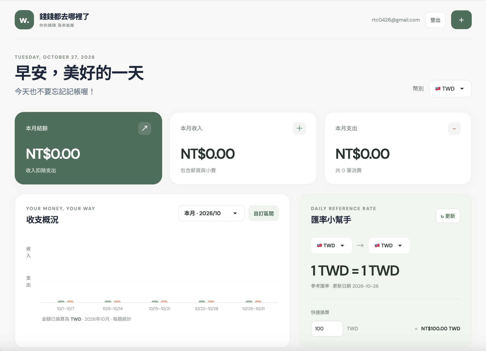
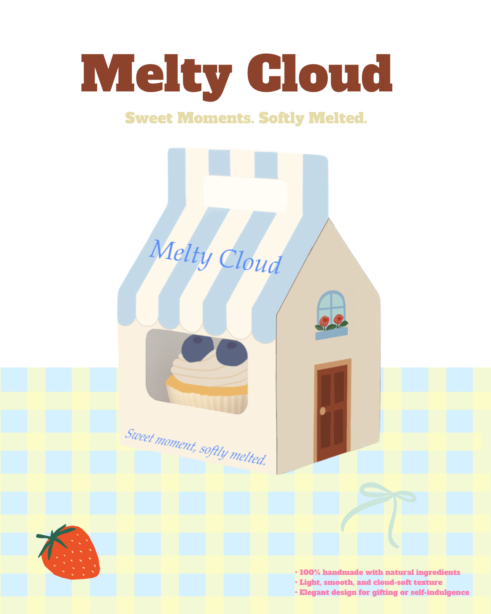
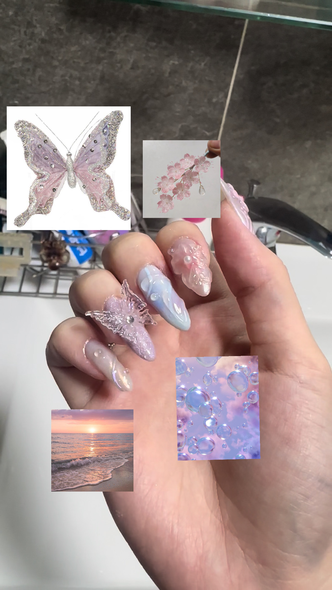

你好，我是張庭華 Harriet
世新大學資訊管理學系畢業。具備資管背景，專注於 UI/UX 設計與前端開發。重視溝通與團隊協作，能快速適應新環境並有效整合資源完成任務。
Hi!點擊快速前往該章節，探索我的設計與創作歷程。
融合資管邏輯思維與美感設計，打造實用且有溫度的數位體驗。
世新大學資訊管理學系畢業。具備資管背景，專注於 UI/UX 設計與前端開發。重視溝通與團隊協作，能快速適應新環境並有效整合資源完成任務。
Hi!UI/UX Design: Figma、UI設計、視覺設計、Blender、Adobe Animate、Unreal Engine
前端開發: HTML、CSS、C#、ASP.NET、資料庫程式設計、Python
英文：流利 (具備全英文職場經驗)
日文：簡單日常溝通
西班牙文：基礎學習中
美甲創作、攝影與旅行觀察是我累積靈感的備忘錄。具備 TQC Flash Certification 專業證照，享受創作帶來的樂趣。
♡跨文化海外工作、溝通管理與行銷設計經驗。
Every little step
becomes part of the story.
Food Service Operator (暑期打工度假)
於遊樂園負責點餐結帳、餐點製作與顧客服務。精準掌握顧客需求並高效處理現場突發問題；培養高度環境適應力、跨文化溝通協調能力與團隊合作精神。
助理導師 / 英文輔導老師 / 課程行銷人員
協助班導師管理班級事務、編排教材與講義；定期與家長溝通回報學習進度，展現優異親師關係管理能力；同時設計招生文宣及行銷活動。
國三會考輔導老師
協助會考考生擬訂全年階段性複習計畫，追蹤考試成效；擔任考生心理輔導老師，每週向家長定期報告學習狀況並協助安排科目。
學習系統分析設計、網頁開發、UI/UX 設計與資料庫應用，建立穩固的資管與軟體開發專業基礎。
點擊任意專案卡片，即可開啟專案 Case Study 詳細介紹。



美國加州打工度假、日常觀察與設計靈感收集。
記錄在美國加州 Santa Cruz 的生活點滴、跨文化團隊合作體驗。這些生活中的觀察與養分，都成為我創作時的重要靈感來源。
無論是 UI/UX 設計、網頁前端開發或專案合作，歡迎隨時與我聯繫！